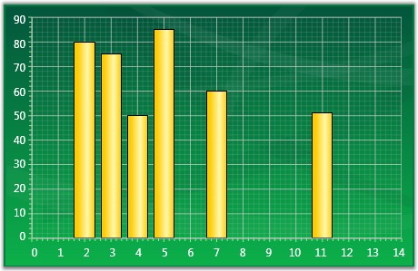
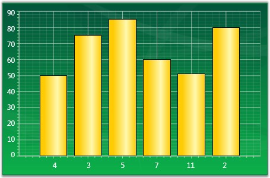

By default points in a series are plotted against their X and Y values. However in some cases the X values are meaningless, they simply represent categories, and you do not want to plot the points against such X values. Such an X axis that ignores the X-values and simply uses the positional value of a point in a series is said to be indexed.
The below given code snippet could be used to make a series as Indexed.
|
[XAML]
<sfchart:ChartSeries IsIndexed="True" /> |
|
[C#]
//Sets the series as indexed series.IsIndexed = true; |
In the figure below, the first chart shows a column chart that is not-indexed while the second chart shows a column chart whose x-axis is indexed.

Figure 170: Column Chart with IsIndexed property set to False

Figure 171: Column Chart with IsIndexed property set to True